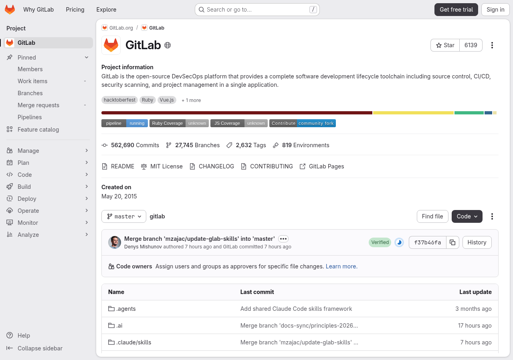
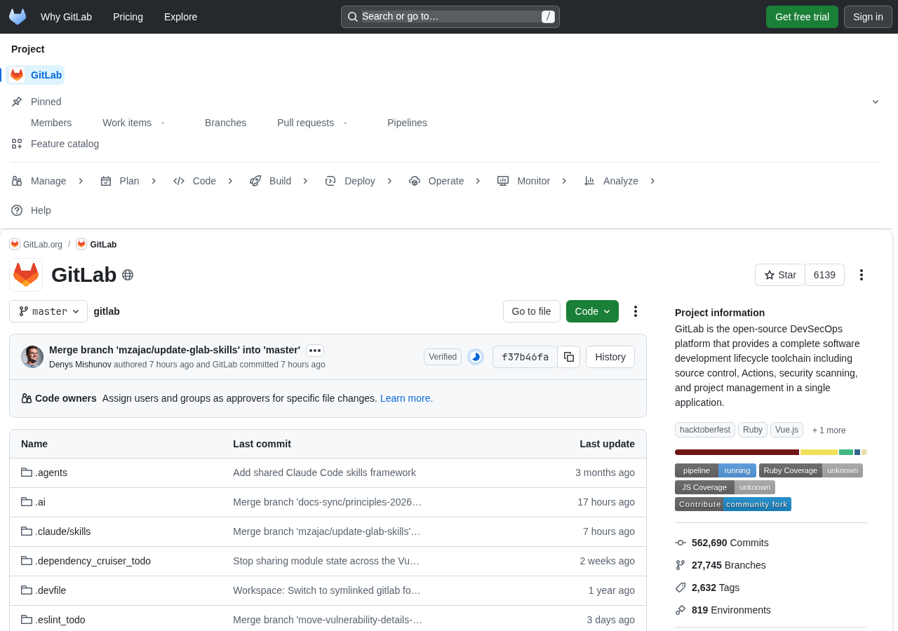
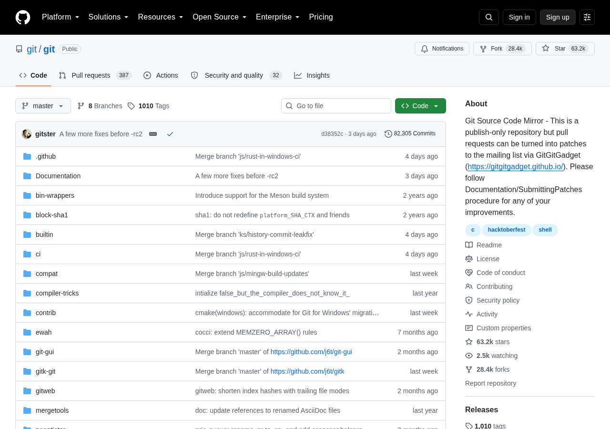
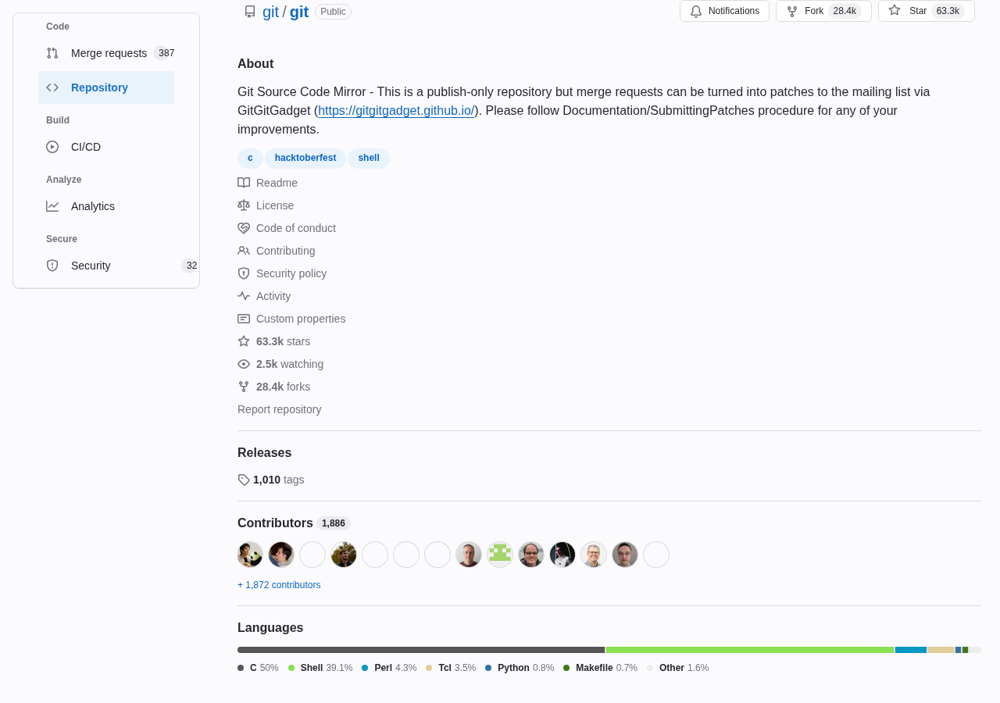
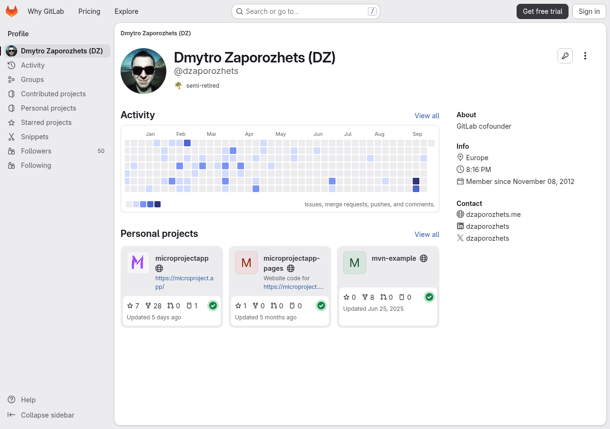
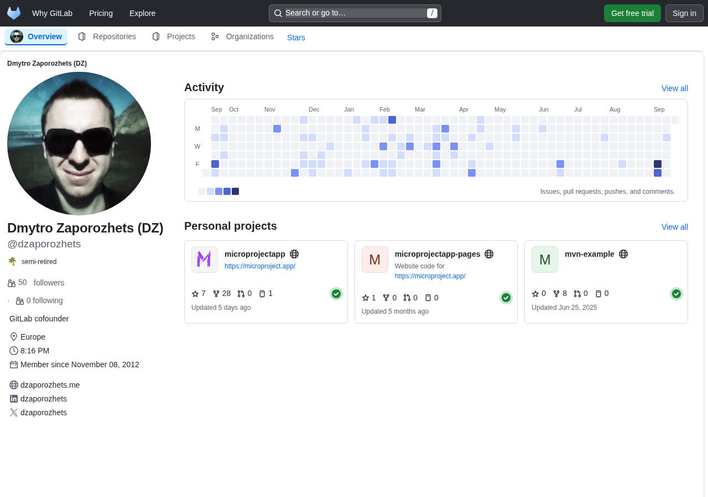
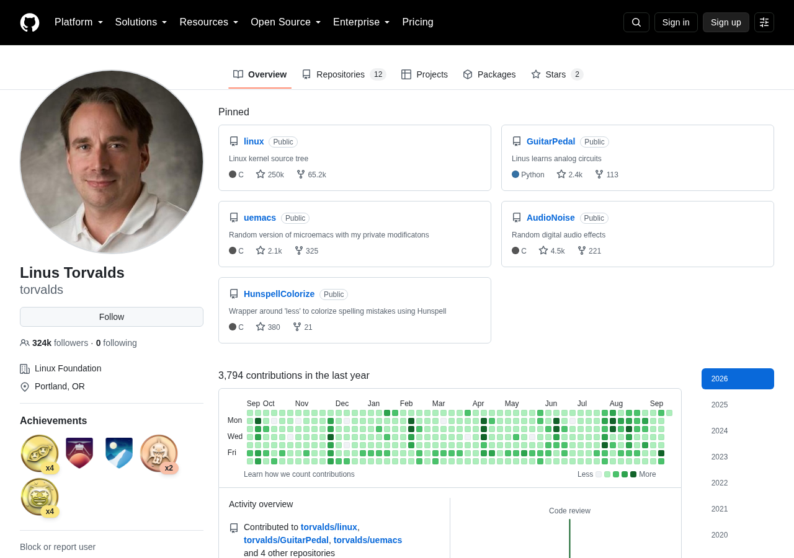
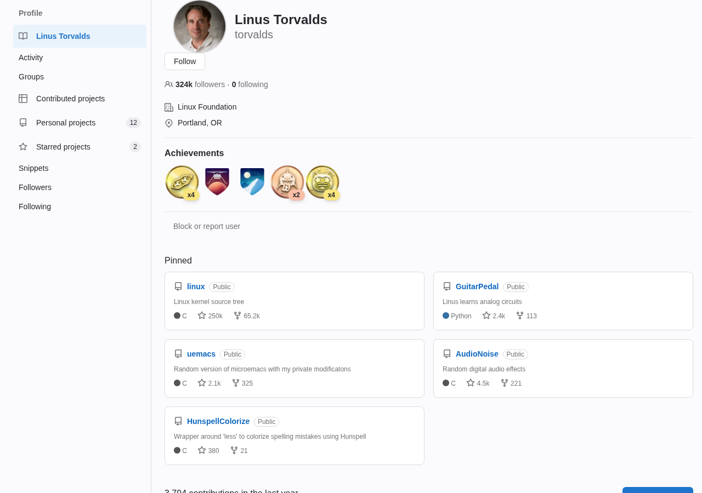

GitLab project page
Left: GitLab as it ships — a vertical sidebar. Right: the same page skinned as GitHub — a horizontal top bar.


GitLab default · sidebar GitHub skin · top bar ↔GitHub project page
Left: GitHub as it ships — a horizontal tab bar. Right: the same page skinned as GitLab — a vertical sidebar-style column.


GitHub default · tab bar GitLab skin · sidebar column ↔GitLab profile page
Left: GitLab as it ships — a vertical super-sidebar starting at the person's name. Right: the same page skinned as GitHub — a flat row of tabs rebuilt as GitHub's (Overview, Repositories, Projects, Organizations, Stars), with the identity in a left card under a large avatar — the follower/following counts and location brought down from the navigation.


GitLab default · sidebar GitHub skin · top strip ↔GitHub profile page
Left: GitHub as it ships — a horizontal profile tab row. Right: the same page skinned as GitLab — a full-height super-sidebar headed "Profile" and rebuilt as GitLab's menu (Activity, Groups, Personal projects, Starred projects, Snippets, Followers, Following), with the profile header moved into the content.


GitHub default · tab row GitLab skin · left rail ↔